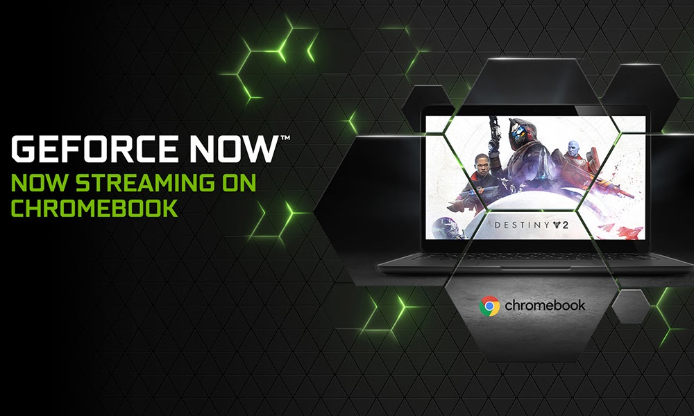
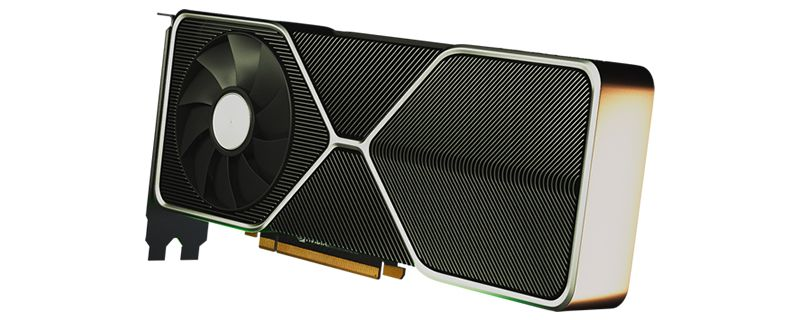
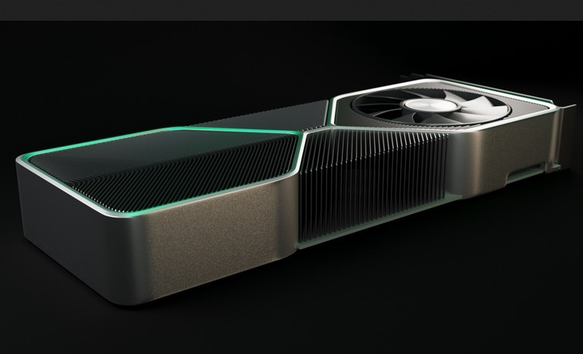

Noticias NVIDIA

El gigante verde ha confirmado que beta de NVIDIA GeForce Now ya está disponible en Chrome OS, el conocido sistema operativo de Google que, como sabrán la mayoría de nuestros lectores, se utiliza en la línea de equipos Chromebook. Se trata de un movimiento muy importante, ya que Chrome OS no es, precisamente, un sistema operativo pensado para mover juegos de última generación.
Gracias a la llegada de la beta de NVIDIA GeForce Now los usuarios de este tipo de equipos podrán disfrutar de juegos triple A sin tener que preocuparse por el hardware. Esto posible gracias a la «magia de la nube» La beta de NVIDIA GeForce Now parte de un programa cliente que se instala en nuestro equipo, y que sirve como nexo de unión entre este y los servidores de NVIDIA. Cuando queremos disfrutar de un juego en concreto, este no se ejecuta en nuestro Chromebook, sino en la nube. Los servidores de NVIDIA son los que se ocupan de sacar adelante todo el trabajo pesado, y de enviar y recibir información necesaria a nuestro dispositivo para que podamos controlar el juego.
Fuente:
Hay nueva información sobre el buque insignia de nueva generación de Nvidia, tenemos más detalles y un posible precio. Nvidia dejará de usar su marca XX80 Ti y creará un nuevo modelo de insignia de GPU llamado RTX 3090. Esta nueva tarjeta gráfica saldrá al mercado con un precio de 1399 USD, según esta información, y los modelos Founders Edition saldrán al mercado con una prima de 100 USD por 1499 USD. Esto contrasta con la información previa que costaría unos 2000 USD aproximadamente.
El nuevo buque insignia de Nvidia se publicará con 24 GB de memoria GDDR6X, un nuevo tipo de memoria que ofrece más ancho de banda en bruto que los modelos GDDR6 actuales. Micron reveló que la memoria GDDR6X ofrecerá velocidades de memoria de entre 19 Gbps y 21 Gbps, ofreciendo a Nvida hasta un 50% de incremento en el ancho de banda sobre la memoria GDDR6 de 14 Gbps que se utiliza en su tarjeta gráfica RTX 2080 Ti.
Fuente:
Según NVIDIA, esta nueva versión del Studio Driver incluye numerosas optimizaciones que mejoran la experiencia de uso en algunas de las aplicaciones profesionales más utilizadas para la edición de vídeo y del diseño 3D, como por ejemplo Adobe Premiere Rush, Premiere Pro, Blender Cycles y V-Ray 5 para Maya. En Adobe Premiere Rush esta nueva versión del Studio Driver nos permitirán disfrutar de la tecnología Auto Reframe que, apoyada por la inteligencia artificial Adobe Sensei, mantiene la parte más importante de las grabaciones dentro de plano a la hora de reformatear la relación de aspecto para los diferentes tamaños de las redes sociales, lo que nos ahorrará horas de trabajo en ajustes manuales.
V-Ray 5 de Chaos Group, disponible para usuarios de Autodesk Maya, aprovecha la aceleración a través de GPU (no es necesario contar con núcleos RT ni con núcleos tensor) para renderizar a través de NVIDIA CUDA, lo que mejora en gran medida el rendimiento trabajando con luces, materiales y gestión del color, como LightMix, y con Layer Compositing, que nos permite finalizar las imágenes directamente en el frame buffer de V-Ray, evitando así tener que recurrir, por separado, a una aplicación de postprocesamiento.
Fuente:
Primero fue Turing, y ahora le toca a Ampere. La nueva familia de gráficas de NVIDIA se prepara para llegar al mercado, y la empresa tiene todo preparado para su presentación el próximo 1 de septiembre. Eso es al menos lo que parece indicar un pequeño mensaje en Twitter en el que aluden a "la cuenta atrás definitiva" con una estrella que se convierte en supernova y que perfila un lanzamiento muy importante que según todos los indicios será el de las esperadas y prometedoras NVIDIA GeForce RTX 3000.
En otro teaser ayer se mencionaba el mensaje "21 días, 21 años" lo que parecía dar a entender que efectivamente habrá evento importante de NVIDIA el 1 de septiembre. La empresa acaba de confirmar oficialmente que habrá un evento especial ese día a las 18:00 CEST. Aunque en NVIDIA no hay nada confirmado, todos los rumores apuntan al lanzamiento de las esperadas RTX 3000 que según las filtraciones previas dejan atrás en potencia a la familia actual con rendimientos que son de hasta el 30% máyores que el de tarjetas actuales del mismo rango.
Fuente:
- Nvidia Corporation, más conocida comunmente conmo Nvidia, es una compañía estadounidense constituida con Deleware y con sede en Santa Clara, California.
- Nvidia es mundialmete la primera compañía en el desarrollo de unidades de procesamiento de gráfico para los mercados de video juegos y profesionales, así como sistemas en unidad de chip (SoC) para el mercado de computación movil y automotríz. Su line principal de productos de GeForce está en competencia directa con los productos Radeo de AMD.
- Nvidia propporciona en todo el mundo capacidades de procesamiento en paralelo a investigadores y científicos, que les permite ejecutar de manera eficiente aplicaciones de alto rendimiento.
- Nvidia se ha transformado en una compañía en cuatro mercados: Juegos, visualización profesional, centro de datos e inteligencia artificial y automóviles.
- El lanzamiento de RIVA TNT en 1998 cosolidó la reputación de envidia para el desarrollo de adaptadores gráficos. A finales de 1999, Nvidia lanzó la GeForce 256 (NV10), que más notablemente introdujo la transformación e ilumiación a nivel de consumidor en hardware 3D y funcionaba a 120 Mhz.
- En Julio de 2002 Nvidia adquirío Exluna por una cantidad de dinero no revelada. Exluna era responsable de la creación de varias herramientas de representación de software.
- Tan grande era el éxito de Nvidia en el mercado de los videojuegos, que en Diciembre del 2004, se anunció que ayudaría con Sony con el diseño del procesador de gráficos RSX de la Play Station 3.
- Forbes nombró a Nvidia como la mejor compañía en el año 2007 citando los logros que obtuvo durante los cinco años anteriores. El 5 de Enero del 2007, Nvidia anunció que había completado la adquisición de Portal Player, Inc.
- Nvidia se enfrentó a una gran dificultad en Julio de 2008, cuando recibió una reducción en sus ingresos de aproximadamente 200 millones luego de informarse que ciertos conjuntos de chips y GPU móviles producidos por la compañía tenían tasas de fallos anormales debido a defectos de fabricación.
- En noviembre de 2012, Nvidia lanzó su sistema de chip ARG Tegra 3 para dispositivos móviles despues de presentarlos en el Movile World Congress. Nvidia afirmó que el chip presentabala primera CPU de cuatro núcleos.
- El 6 de Mayo de 2016 Nvidia presentó las targetas gráficas GeForce GTX 1080 y 1070, las primeras basadas en la nueva microarquitectura Pascal. La arquitectura Pascal también admite una nueva característica de hardware conocida como Proyección Múltiple Simultanea, que está diseñada para mejorar la calidad del renderizado de míltiples monitores y realidad virtual..
- La arquitectura Pascal de Nvidia ha sido desarrollada para ser la más eficiente y avanzada del mundo gaming. El equipo de Nvidia ha puesto un gran esfuerzo en crear una arquitectura de GPU que sea capáz de alcanzar unas velocidades de relog muy elevadas.
- Las GPU de Nvidia son muy utilizadas en el aprendizaje profundo, la inteligencia artificial y el análisis acelerado de grandes cantidades de datos. la compañía desarrolló el aprendizaje profundo basado en la tecnología de GPU, con la finalidad de utilizar la Inteligencia Artificial para abordar problemas como la detección del cancer y los vehíulos autónomos como lo es Tesla Motors.
- En abril de 2016, Nvidia introdujo el superordenador DGX-1 basado en u cluster de 8 CPUs, para mejorar la capacidad de los usuarios de utilizar el aprendizaje profundo mediante la combinación de GPU con software específicamente diseñado. Nvidia también desarroló las máquinas virtuales Nvidia Tesla K80 y P100 basadas en GPU.
- La primera tarjeta gráfica fabricada por Nvidia con la arquitectura Volta fué la Tesla V100, la cual forma parte del sistema Nvidia DGX-1. La Tesla V100 hace uso del núcleo GV100 que fué lanzado el 21 de Junio del 2017.
- G-Sync es una tecnología patentada de seincronizacióm adaptiva desarrollada por Nvidia, cuyo objetivo principal es eliminar el desgarro de la pantalla y la necesidad de alternativas de software como V-Sync. G-Sync elimina el desgarro en la pantalla al forzar que esta se adapte al framerate del dispositivo de salida.
Fuente:
© Copyright. Todos los derechos reservados. Diego_Fernandez - 2020.